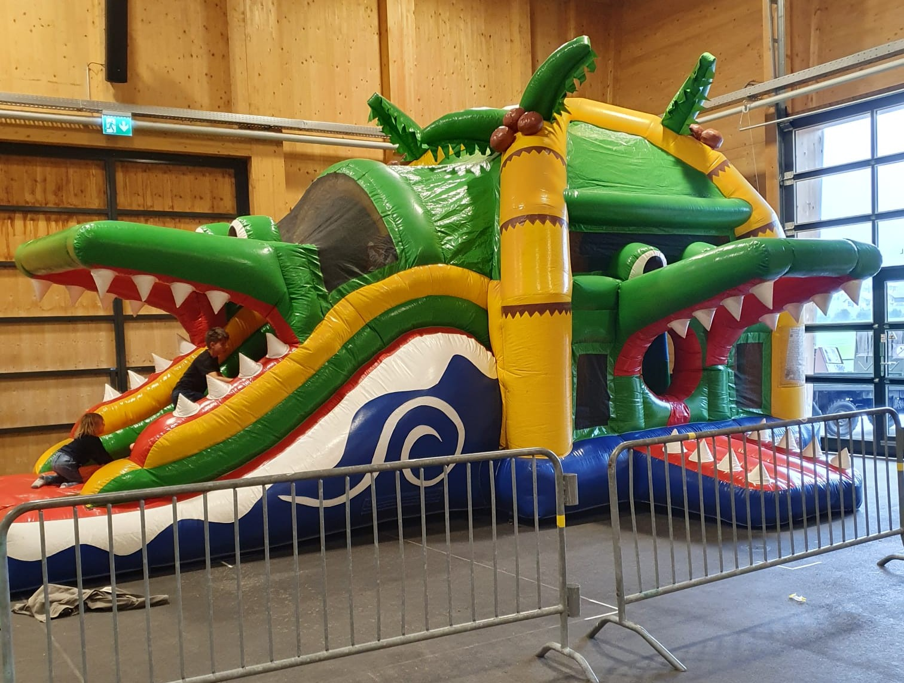

Autos
Historische Personenwagen, Sportwagen und Klassiker aller Marken.
Oldtimertreffen 2026
Hier finden Sie alle wichtigen Angaben zum zweiten Oldtimertreffen der IG Oldtimerfreunde Obersimmental-Saanenland.
Simmental Arena, Zweisimmen
03. & 04. Oktober 2026
Jeweils von 10:00 bis 17:00 Uhr
Gratis, freiwillige Spendenkasse vor Ort
Freuen Sie sich auf ein abwechslungsreiches Wochenende mit historischen Autos, Motorrädern,
Traktoren und Nutzfahrzeugen. Das Treffen bietet Gelegenheit, besondere Fahrzeuge zu entdecken,
Erfahrungen auszutauschen und gemeinsam die Freude an historischen Fahrzeugen zu teilen.
Historische Personenwagen, Sportwagen und Klassiker aller Marken.
Klassische Motorräder, Roller und weitere historische Zweiräder.
Landwirtschaftliche Klassiker und historische Arbeitsmaschinen.
Lastwagen, Transporter und historische Spezialfahrzeuge.
Der Anlass ist für alle Interessierten geöffnet. Ein eigenes Oldtimerfahrzeug ist für den Besuch selbstverständlich nicht erforderlich.
Der Eintritt ist kostenlos. Vor Ort steht eine freiwillige Spendekasse bereit.
Historische Fahrzeuge aller Marken bis und mit Jahrgang 1996 sind herzlich willkommen.
Für die Verpflegung während des Oldtimertreffens ist ebenfalls gesorgt.
Das Restaurant Arena befindet sich direkt auf dem Veranstaltungsgelände, ist während des Anlasses geöffnet und freut sich auf Ihren Besuch.
Auch für unsere kleinen Besucher ist gesorgt: Während des Oldtimertreffens steht eine Hüpfburg bereit.

🎈 HüpfburgSobald neue Details zum Oldtimertreffen feststehen, werden sie auf dieser Seite veröffentlicht.
Benötigen Sie weitere Informationen zum Treffen? Treten Sie gerne mit uns in Kontakt.